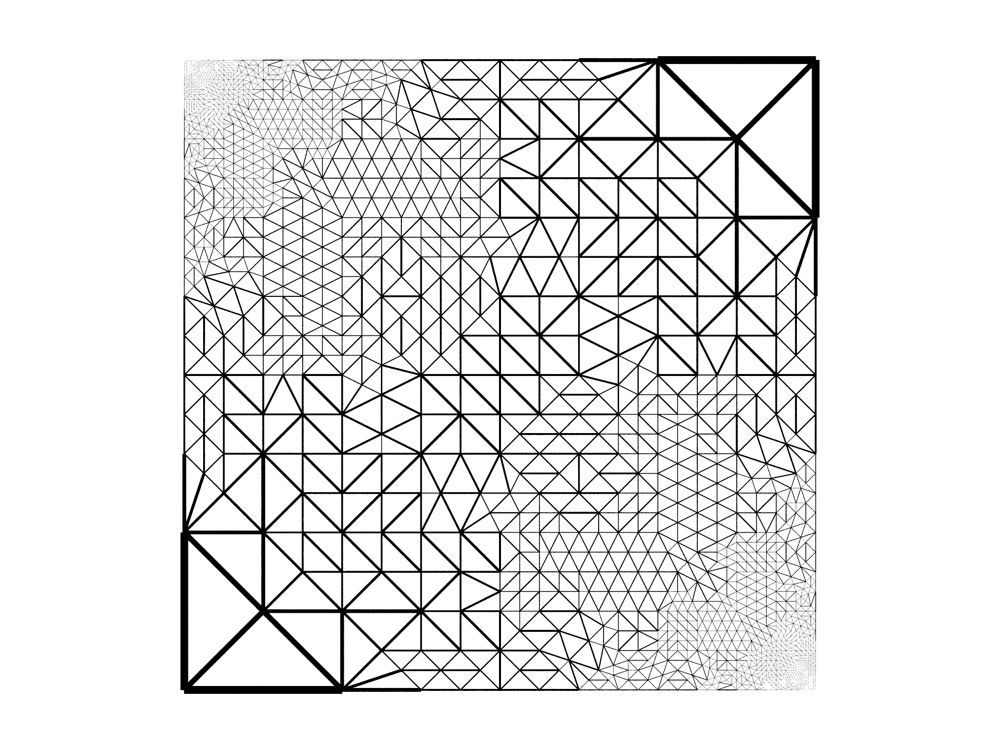
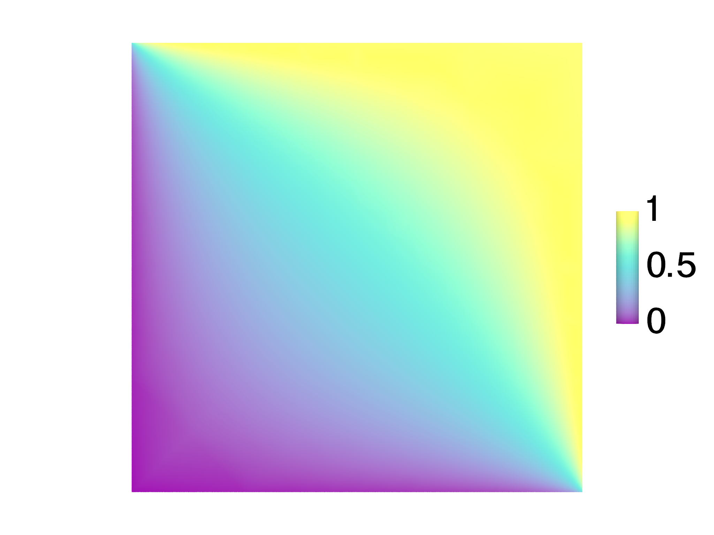

Electrostática
Este ejemplo muestra cómo resolver un problema electrostático simple con refinamiento adaptativo y proporciona un ejemplo útil de cómo convertir un problema que normalmente se considera como la resolución de un PDE como un problema de optimización.
Supongamos que queremos resolver la ecuación de Laplace,
$$\nabla^{2}\phi=0$$
en un dominio cuadrado \(C\) definido por \(-L/2\leq x\leq L/2\) y \(-L/2\leq y\leq L/2\). Una formulación equivalente adecuada para morpho es minimizar,
$$ \begin{equation} \int_{C}\left|\nabla\phi\right|^{2}dA \label{eq:el1} \end{equation} $$
con respecto a \(\phi\).
Podemos demostrar que los dos son equivalentes aplicando el cálculo de variaciones a la \eqref{eq:el1},
$$ \delta\int*{C}\left|\nabla\phi\right|^{2}dA =\int*{C}\delta\left|\nabla\phi\right|^{2}dA $$ $$ =\int_{C}\frac{\partial}{\partial\nabla\phi}\left|\nabla\phi\right|^{2}\cdot\delta\nabla\phi dA,$$
e integrando por partes,
$$ \begin{align} \int_{C}\frac{\partial}{\partial\nabla\phi}\left|\nabla\phi\right|^{2}\cdot\delta\nabla\phi dA & =\int_{\partial C}\nabla\phi\cdot\hat{\mathbf{s}}\delta\phi dl-\int_{C}\nabla\cdot\frac{\partial}{\partial\nabla\phi}\left|\nabla\phi\right|^{2}\delta\phi dA\nonumber \\ & =\int_{\partial C}\nabla\phi\cdot\hat{\mathbf{s}}\delta\phi dl-\int_{C}\nabla^{2}\phi\delta\phi dA,\label{eq:bulkvariations} \end{align} $$
Nota Si no estás familiarizado con el cálculo de variaciones, siéntete libre de omitir los párrafos que se refieren a "variaciones". El cálculo de variaciones generaliza el cálculo de la diferenciación con respecto a las variables a la diferenciación con respecto a las funciones.
donde \(\hat{\mathbf{s}}\) es la normal externa. Por lo tanto, permitiendo variaciones arbitrarias \(\delta\phi\), para que el integrando masivo desaparezca, la ecuación de Laplace \(\nabla^{2}\phi=0\) debe ser satisfecha. De manera similar, al requerir que el integrando de frontera desaparezca, se obtiene la condición de contorno "natural" \(\nabla\phi\cdot\hat{\mathbf{s}}=0\), conocida como la condición de contorno de Neumann. En ausencia de energías límite, la resolución de \(\nabla^{2}\phi=0\) en \(C\) sujeta a \(\nabla\phi\cdot\hat{\mathbf{s}}=0\) en \(\partial C\) produce la familia de soluciones constantes uniformes \(\phi=\text{const}.\)
Para imponer datos de límites, complementaremos \eqref{eq:el1} con la funcionalidad adicional,
$$ \begin{equation} \lambda\int_{\partial C}\left[\phi-\phi_{0}(\mathbf{x})\right]^{2}dl\label{eq:anchoring} \end{equation} $$
donde la función \(\phi_{0}\) representa algún potencial límite impuesto. Tomando variaciones de este funcional,
$$ \begin{align} \delta\lambda\int_{\partial C}\left[\phi-\phi_{0}(\mathbf{x})\right]^{2}dl & =\lambda\int_{\partial C}\frac{\partial}{\partial\phi}\left[\phi-\phi_{0}(\mathbf{x})\right]^{2}\delta\phi dl\nonumber \\ & =\lambda\int_{\partial C}2\left[\phi-\phi_{0}(\mathbf{x})\right]\delta\phi dl\label{eq:boundary} \end{align} $$
Recopilando los términos de frontera de \eqref{eq:bulkvariations} y \eqref{eq:boundary}, obtenemos la condición de frontera equivalente en \(\phi\), $$\nabla\phi\cdot\hat{\mathbf{s}}+2\lambda(\phi-\phi_{0})=0,$$ que se conoce como condición de límite de Robin. Como \(\lambda\to\infty\), \(\phi\to\phi_0\) en el límite, recuperando un límite fijo o condición de Dirichlet, mientras que como \(\lambda\to0\), recuperamos las condiciones de Neumann discutidas anteriormente.
En el ejemplo, estableceremos \(\phi_0=0\) en el límite izquierdo e inferior y \(\phi_0=1\) en el límite derecho y superior, y usaremos \(\lambda=100\).
El código ilustra algunos trucos de morpho. En primer lugar, se utiliza el siguiente código para seleccionar los lados izquierdo/inferior y superior/derecho de la malla:
var bnd = Selection(mesh, boundary=true)
var bnd1 = Selection(mesh, fn (x,y,z) abs(x+L/2)<0.01 || abs(y+L/2)<0.01)
var bnd2 = Selection(mesh, fn (x,y,z) abs(x-L/2)<0.01 || abs(y-L/2)<0.01)
for (b in [bnd1, bnd2]) b.addgrade(1)
bnd1=bnd.intersection(bnd1)
bnd2=bnd.intersection(bnd2)
Lo que sucede aquí es que seleccionamos todo el límite en la primera línea y luego seleccionamos los vértices relevantes en las dos líneas siguientes. A continuación, los bordes se añaden a la selección con addgrade, pero esto también selecciona algunos bordes interiores. Para asegurarnos de que solo tenemos bordes de límite en nuestras selecciones, encontramos la intersección de bnd1 y bnd, y de manera similar para bnd2.
La configuración del problema implica sumar la energía electrostática Eq.\eqref{eq:el1} usando GradSq y los términos de frontera Eq.\eqref{eq:anchoring} como 'LineIntegral's.
var problem = OptimizationProblem(mesh)
var le = GradSq(phi)
problem.addenergy(le)
var v1 = 0, v2 = 1
var lt1 = LineIntegral(fn (x, v) (v-v1)^2, phi)
problem.addenergy(lt1, selection=bnd1, prefactor=100)
var lt2 = LineIntegral(fn (x, v) (v-v2)^2, phi)
problem.addenergy(lt2, selection=bnd2, prefactor=100)
La optimización se realiza con un FieldOptimizer:
var opt = FieldOptimizer(problem, phi)
opt.conjugategradient(100)
El problema, tal como se plantea, requiere que \(\phi\) cambie muy bruscamente en las córneas superior izquierda e inferior derecha a medida que los cambios potenciales impuestos, pero lejos de estos \(\phi\) cambia mucho más lentamente. Por lo tanto, nos gustaría realizar un refinamiento adaptativo, refinando la malla solo en lugares donde \(\phi\) está cambiando rápidamente y usando elementos gruesos en otros lugares.
Para identificar los elementos que se van a refinar, calculamos la energía electrostática en cada elemento, usaremos esto como una medida heurística de la rapidez con la que \(\phi\) está cambiando y encontraremos la energía media por elemento. A continuación, creamos una selección y seleccionamos manualmente los elementos que tienen una energía electrostática superior a \(1,5\times\) la media.
// Select elements that have an above average contribution to the energy
var en = le.integrand(phi) // energy in each element
var mean = en.sum()/en.count() // mean energy per element
var srefine = Selection(mesh)
for (id in 0…en.count()) if (en[0,id]>1.5*mean) srefine[2,id]=true
// identify large contributions
A continuación, el refinamiento se realiza con un objeto MeshRefiner del módulo meshtools, que creamos con una lista tanto de la malla para refinar y todas las cantidades que hacen referencia a la malla:
var ref = MeshRefiner([mesh, phi, bnd, bnd1, bnd2])
El refinamiento se realiza utilizando la selección srefine que se acaba de crear
var refmap = ref.refine(selection=srefine)
que devuelve un diccionario que asigna las cantidades antiguas a las nuevas refinadas. Usamos este diccionario para actualizar OptimizationProblem y FieldOptimizer,
for (el in [problem, opt]) el.update(refmap)
y finalmente actualizar nuestras variables
mesh = refmap[mesh]
phi = refmap[phi]
bnd = refmap[bnd]
bnd1 = refmap[bnd1]
bnd2 = refmap[bnd2]
Por último, equiangulamos la malla para ayudar a evitar elementos estrechos,
equiangulate(mesh)
Una vez que se completa el refinamiento, se puede producir una mayor optimización en la malla recién refinada
opt.conjugategradient(1000)
El proceso de refinamiento y optimización que acabamos de describir tiene lugar en un bucle. La malla resultante después de 10 iteraciones se muestra en la Fig. 7.6, junto con la solución \(\phi\). El código se ejecuta en unos pocos segundos, lo que proporciona una aceleración considerable en comparación con la optimización en una cuadrícula fina para obtener una precisión comparable.
